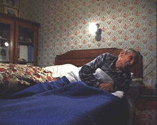

|
VAD (VISIT AT HOME)
Noëlle Pujol | F 2002 | 25 min.
Format: Beta SP
Original language: French
Script: Noëlle Pujo
Camera: Noëlle Pujo
Editing: Gabriel Humeau
Sound: Géry Petit
Production: Le Fresnoy, Studio National
des Arts Contemporains, Tourcoing
German Premiere
Noëlle Pujol, born 1972 in Saint-Girons (Ariège), lives and works in Saint Ouen. She studied at the Ecole Supérieure Nationale des Beaux-Arts in Paris. Her art works are exploring the domains of video installation and documentary cinema.
Films (selection): Baby-F 1999 | VAD (Visite à domicile) 2002 | Allohajo 2004 | Le Ver 2006 | Le Préparateur 2006
Group Expositions (selection): „Touching from a distance-Germinations 13“, Crawford Gallery Cork 2002 | „From a global world“ Galerie Ludovic de Wavrin, Paris 2003 | „Ficcions documentals“, „CaixaForum“ Fundacio la Caixa, Barcelona 2004 | „Sportivement vôtre“, Domaine Départemental de Chamarande 2004
back
|